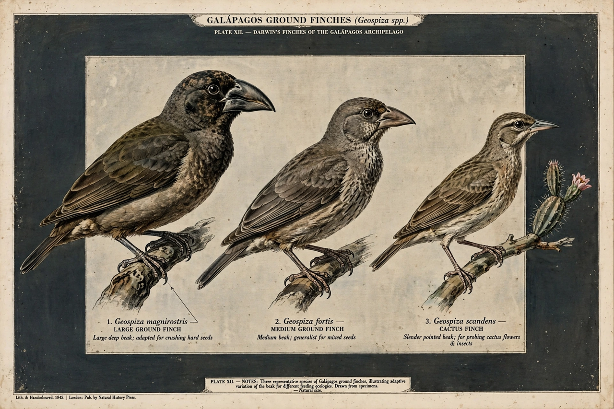

Natural selection

[Image: the beaks of Galápagos ground finches, showing variation in size and shape between species adapted to different foods]Natural selection is the differential survival and reproduction of individuals due to differences in phenotype. It is a key mechanism of evolution — the change in the heritable traits characteristic of a population over generations. The concept was published jointly by Charles Darwin and Alfred Russel Wallace in 1858, and Darwin developed it at length in On the Origin of Species (1859), where he described it as analogous to the artificial selection practised by breeders, calling it the "preservation of favoured races in the struggle for life".
Natural selection acts on the variation that exists in a population. Some variants leave more offspring than others because they are better suited to their environment, better at evading predators, or more successful in competition. Over many generations the population's inherited make-up shifts, producing adaptation — an increasingly close fit between organisms and their surroundings. Together with mutation, migration and genetic drift, selection is one of the basic forces of evolution and the only one that consistently produces adaptation.
Mechanism
Selection requires three ingredients: variation among individuals, heredity of that variation, and differential reproductive success correlated with it. Darwin lacked a correct theory of inheritance — he knew nothing of genes — but the modern synthesis of the 20th century joined his mechanism to Mendelian genetics, showing that selection works by changing allele frequencies in populations.
Selection can take different forms. Directional selection favours one extreme of a trait; stabilising selection favours intermediate values; disruptive selection favours both extremes and can contribute to speciation. Sexual selection, which Darwin treated separately, favours traits that improve mating success even at some cost to survival.
Evidence and examples
Classic field examples include the peppered moth, whose dark form spread in industrial England as soot blackened tree bark and declined again after clean-air laws; the beak sizes of Galápagos finches, which shift measurably between wet and dry years; and antibiotic resistance in Bacteria, where selection acts fast enough to be a clinical problem. Fossil succession and laboratory evolution experiments show the same process over longer and shorter timescales respectively.
Fitness
Biologists summarise success as fitness: roughly, the expected number of descendants an organism (or a gene) contributes to future generations. Fitness is always relative and environment-dependent — a trait advantageous in one setting may be costly in another, which is one reason evolution produces trade-offs rather than perfection.